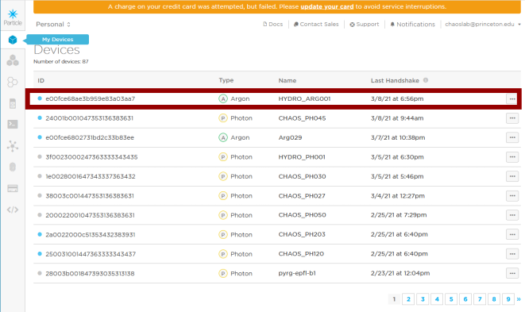
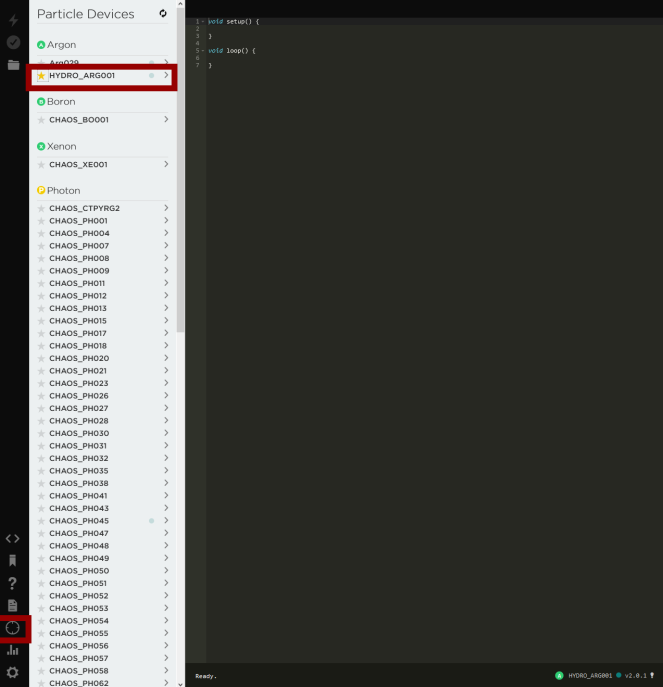
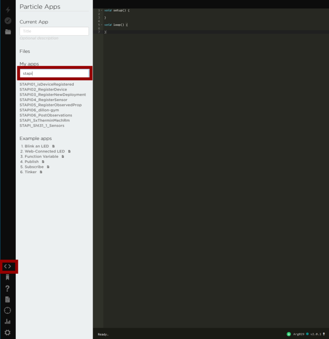

1. Register Particle Device#
Register and setup your Particle device with our chaos lab particle account (You can do it with your own Particle account too). For login information to the Chaos account please approach members of the lab. Follow the instruction here.
a. Sometimes, you might have some problem with registering. Doing a factory reset on the Argon might be useful. Instructions to doing a factory reset. A summary is provided here.1) Begin holding the MODE button down. 2) While holding the MODE button down, tap the RESET button briefly. 3) After 3 seconds the core will begin blinking yellow, KEEP HOLDING the MODE button. 4) After 10 seconds the core will begin blinking white. When this happens the factory reset process has begun. Let go of the MODE button.
It is possible to register the device using the command line on your laptop too. First connect the Particle device to your laptop with a data cable. Download the Particle Cli here.
Once installed go to the terminal, make sure the device is in listening mode (blinking blue). Type in the following command to get the device id.
particle identify
After you have gotten the device id, type in the following. You will be prompted to input the ssid and password of the wifi network you want to connect to.
particle serial wifi
once connected go to the particle web ide. Under the device column, go to the very bottom and click on add device. Key in the device id and you can claim the device. Make sure the device is breathing cyan (connected to internet).
Once your device is registered, go to the particle web console. Check if the device is on the list.

Fig. 1.3 We have named our Argon HYDRO_ARG001.#
Go to the Web IDE. Go to the Devices tab, star the device that you have registered.

Fig. 1.4 Star Argon HYDRO_ARG001, so we can flash to the device.#
Click on the code option on the left side bar. In the search bar for ‘My apps’ search for ‘STAPI’. You will see a series of STAPIXX_XXX scripts.

Fig. 1.5 STAPIxx series of scripts#
For a general description of the integration of Particle with our database (FROST-Server) refer to here.
{kind=link}
{kind=link}
{kind=link}